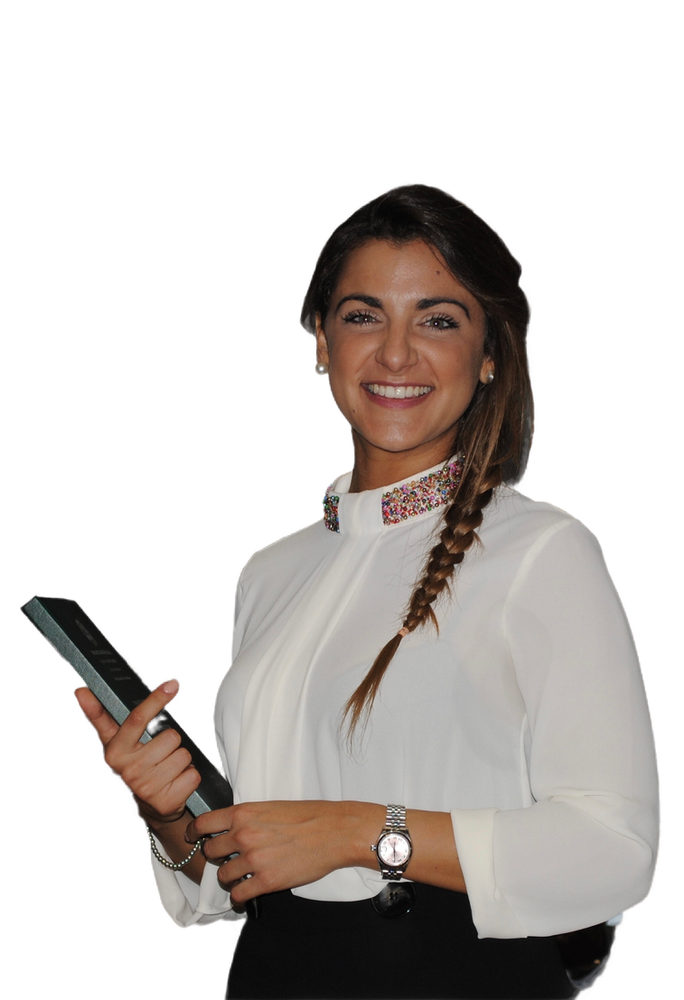

Online, a Voghera e a Bellinzona
Scegli tu come lavorare insieme: da casa, in studio, o un po' e un po'.
Online
Il percorso Equilibrium si svolge in videochiamata, quindi puoi seguirlo da casa, dall'ufficio o dall'altra parte del mondo. Seguo persone in tutta Italia, in Svizzera e anche oltreoceano.
Tra una call e l'altra ci sentiamo su WhatsApp, e nel tuo spazio privato trovi piano, ricette, menu e guide.

Voghera (PV)
Via Verdi 46, 27058 Voghera (PV)
Lo studio dove ricevo per le visite in presenza in Italia. Qui facciamo l'anamnesi, la valutazione della composizione corporea e costruiamo insieme il tuo piano.

Sementina, Bellinzona (CH)
In Svizzera ricevo a Sementina, alle porte di Bellinzona. Stesso metodo e stessa attenzione dello studio di Voghera, per chi vive in Ticino.

Il percorso ibrido
Ti piace vedermi di persona ma vorresti anche il supporto del percorso online? Si può fare.
Con il percorso ibrido unisci le visite in studio, a Voghera o a Sementina, a tutto quello che offre Equilibrium: la chat WhatsApp con me, la community, le ricette e i materiali. E se segui già il percorso online e abiti vicino, alcune call si possono fare in studio.
Ne parliamo insieme e troviamo la soluzione più comoda per te.
Il primo passo è una chiacchierata
Prenota la videochiamata conoscitiva gratuita: capiamo insieme qual è la soluzione migliore per te. Per una visita in studio puoi anche chiamarmi o scrivermi.